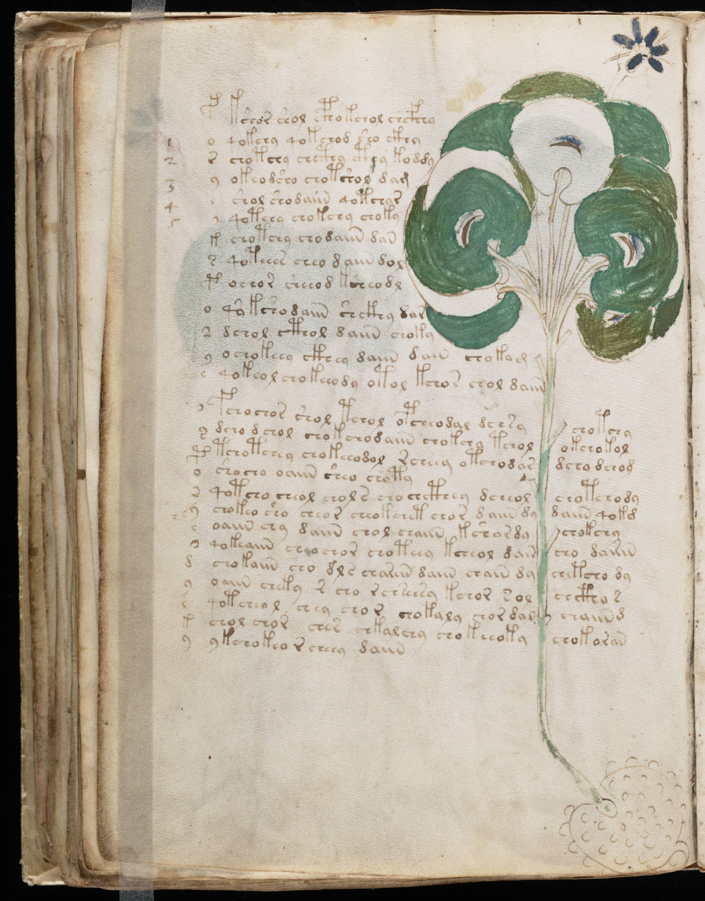

f49v
1f2o3r4y5e6*7k8s9p10o11*12y13e14*15*16p17o18*19y20e21*22d23y24s25k26y27kshor shol cphokchol chcfhhy28qokchy qokchod sho cthy29chotchy chcthy cthy koddy30okeod sho chotshol dam31shol shodaiin qotchar32qotchy chokchy choky33chotchy chodaiin dan34qoteees cheo daiin dol35ochor sheeod ksheodl36qo kshodaiin shckhy dar37dchol cthol daiin choky38ochokeey ckhey daiin dain chokam39qokeol chokeeody otol kchos chol daiin40fchochor shol tchol opcheodal dchsychotchy41dcho d chol chokchodaiin chokchy tcholokchokol42tchotchey chokeeodol rcheey otchodardcho dchog43shocho oaiin sheo choty44qotcho cheol chol s cho chcthey dcheolchotchody45chokeo sho cheor cheokchet chor d aiin dydaiin qokg46oaiin chy daiin chol chaiin kshardychokchy47qokeaiin cheo chor choteey kcheol daincho dairin48chokaiin cho dls chariin daiin chain dychetcho dy49oaiin cheky r cho rchseesy kchor solchctho s50qotcheol chey chor chokaly chor dalchaiind51chol chor ches chkalchy chokeeokychokoran52ykchokeo r cheey daiin
